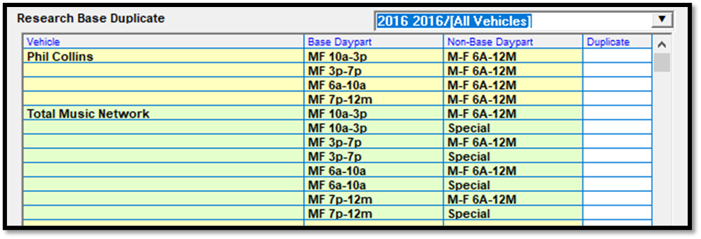
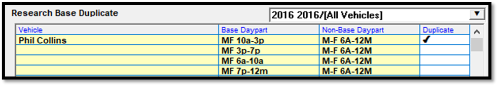
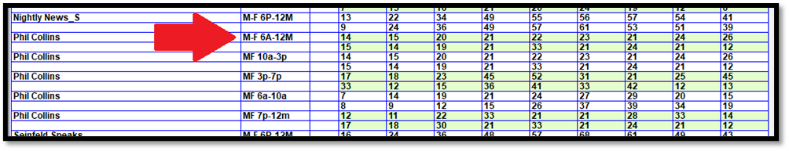
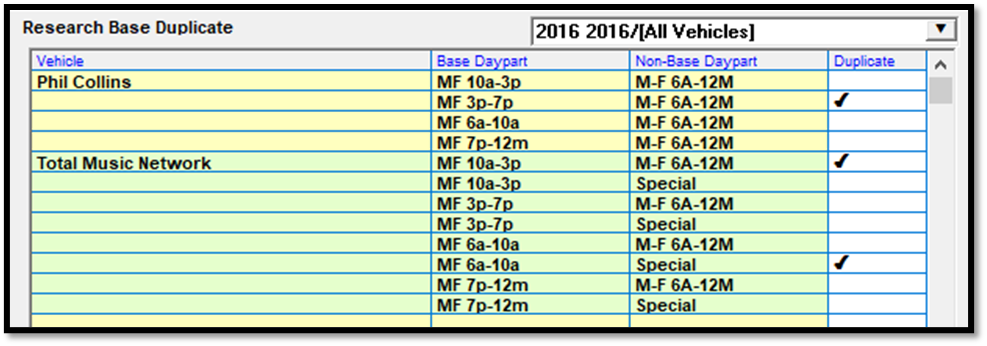
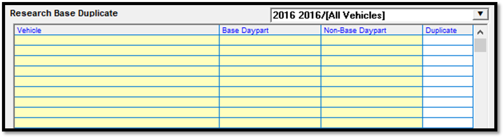

Duplicating Research
Available on version 7.1 and above, there are two Duplicate buttons near the bottom of the screen: “Base Dupl” (available only for the Sold Daypart section) and “Row Dupl”.
Base Duplicate
The Base Duplicate feature makes it possible to create new Sold Daypart records for non-base dayparts by copying the audience values from a base daypart for the same vehicle. (The Base and Non-Base Daypart flags are set on the Rate Card.) To use this feature, bring up a book on the Research screen, and select the Sold Daypart radio button. The “Base Duplicate” functionality is only available for Sold Daypart audience data. Then press the “Base Duplicate” button to bring up the “Research Base Duplicate” screen (shown below). There are three fields on this screen: vehicle, base daypart, and non-base daypart, plus a field labeled Duplicate that is used to select the rows to duplicate.
When first bringing up the “Research Base Duplicate” screen, the rate card you wish to use must be selected from the rate card dropdown in the upper right corner. After selecting the rate card, the screen will be populated with rows by vehicle and daypart for any vehicles that are on the selected rate card, that have at least one non-base daypart on that rate card where the non-base daypart has no audience data on the selected research book in the sold daypart area (so that there are non-base dayparts that don’t have audience data that can be copied to), and that have at least one base daypart on the rate card that is on the selected research book in the sold daypart area (so that there will be base daypart data that can be copied from).

To duplicate the base daypart audience data - including the pre-defined daypart data if defined - to a new non-base daypart row, click in the white Duplicate cell to place a checkmark in the line you wish to create a non-base daypart row for, and then press the Duplicate button (or press Done). In the example below, a check mark was placed for the non-base daypart of MF 6a-12m for the base daypart of MF 10a-3p, so the audience data from the base daypart MF 10a-3p row will be copied to a new MF 6a-12m row.

The rows for the non-base daypart will be removed from the “Base Duplicate” screen, and the row (or rows – more than one non-base daypart row can be created at a time) will be created on the Sold Daypart view.
This picture shows that a new row has been created for the non-base daypart of MF 6a-12m, and the audience data from the MF 10a-3p row has been copied to the new row.

If there’s more than one potential base daypart to copy from for a single non-base daypart, only one can be copied for that non-base daypart, and the system will uncheck a previously checked non-base daypart if a different base daypart is selected when checking on a new base daypart (for that non-base daypart and vehicle), to prevent duplicate rows from being created. Using the example from above, if a check mark was placed in the base daypart row of MF 6a-10a, then the MF 10a-3p row was also checked, the MF 6a-10a row would be unchecked. This prevents conflicting duplicate rows from being created for a single non-base daypart.
Multiple new rows can also be created at a time. The picture below shows an example of how this is done.

When pressing the Duplicate button, it will create a sold daypart row for vehicle Phil Collins, for the non-base daypart MF 6a-12m, using the audience data from the MF 3p-7p base daypart. It will also create two rows for vehicle Total Music Network, one for the non-base daypart MF 6a-12m, using the MF 10a-3p audience data, and one for the non-base daypart Special, using the MF 6a-10a base daypart audience data.
After duplicating rows like this, the Research Base Duplicate screen will be refreshed, and if there’s no non-base dayparts left on the Rate Card that don’t have audience data, the screen will be clear, like the example below shows.

After importing a new research book, users can work through the non-base dayparts by creating rows using the Research Base Duplicate screen until it’s clear.
When new rows have been added to the Research screen using the Base Duplicate feature, press Save on the main Research screen to save any changes.
Row Duplicate
The Row Duplicate button makes it possible to duplicate the audience numbers for a row to a new row, to avoid having to enter the same audience numbers repeatedly when there are rows that have the same audience.
To use this feature, first select a row that you would like to duplicate, then press the Duplicate button. A popup menu will appear with a text entry box to enter the number of times you’d like to copy the row, along with a button labeled “Duplicate with vehicle”, which will duplicate the row and retain the vehicle, “Duplicate without vehicle”, which will duplicate the row but not copy the vehicle, and Cancel, to close the popup without duplicating any rows. When a duplicate row is created, it will be added to the next available row.
This feature can be used for the Sold Daypart, Extra Daypart, Time, and Vehicle sections. When duplicating a row in the Sold Daypart section, the daypart will be cleared on the new row that gets created. When duplicating a row in the Extra Daypart section, the time will be cleared. When duplicating a row in the Time section, the time and days will be cleared. When duplicating a Vehicle row, the days will be cleared.
Note: pre-defined daypart audience numbers are not duplicated with the Row Duplicate action. Only the main body audience numbers are duplicated.